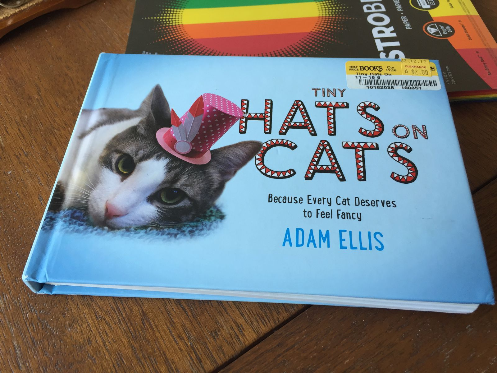
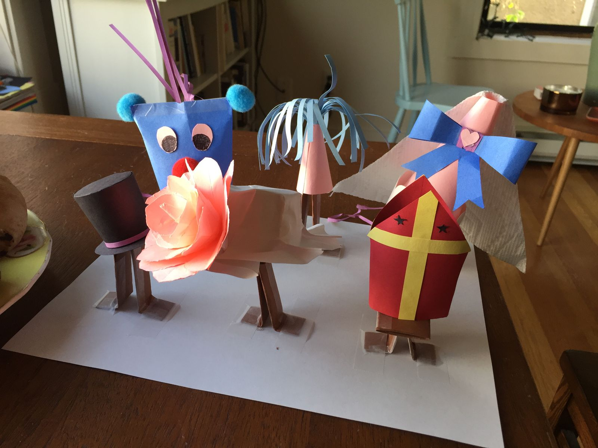
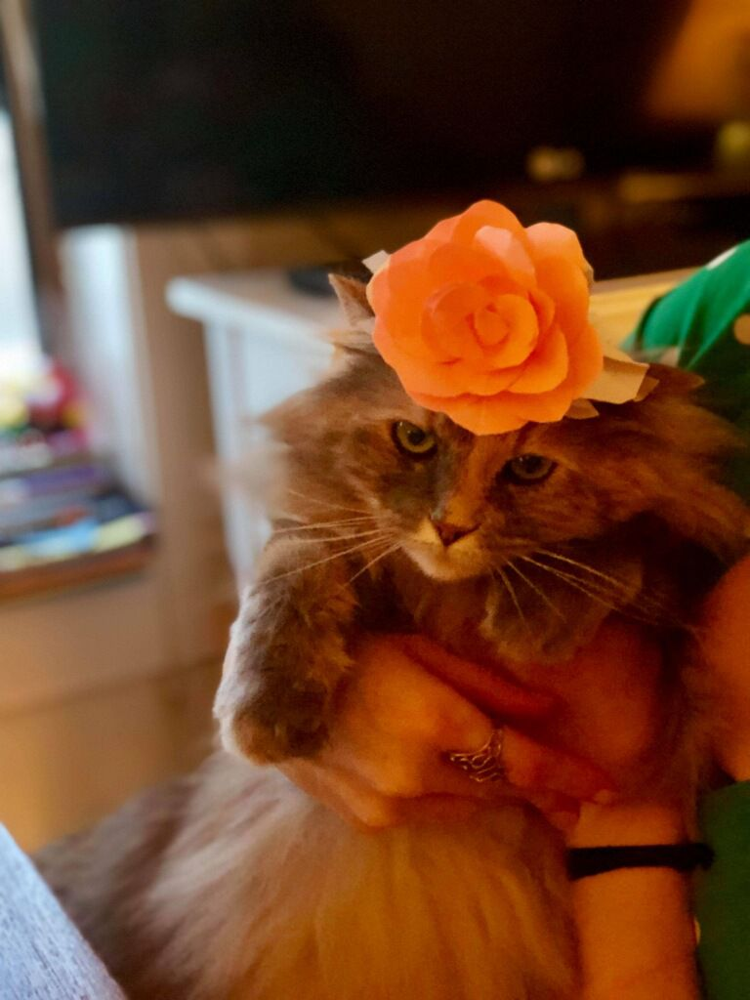
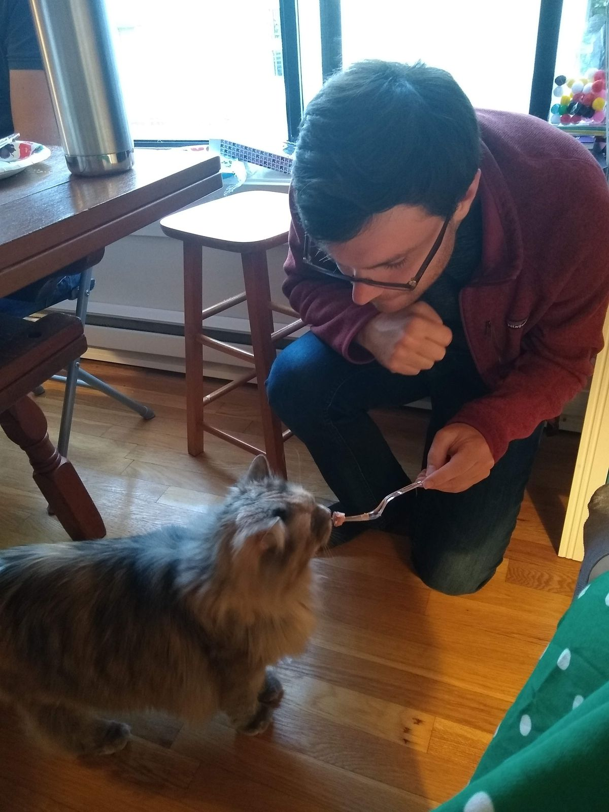

Hats on Cats
Every Easter, one of my friends throws a Hats on Cats Easter party. This tradition was started after she found the book Tiny Hats on Cats at a thrift store. Basically, it's a crafts event that terrifies her two cats, but they are rewarded for their troubles with ham.

In total about seven people showed up for the event. There was plenty of food: hot cross buns, cookies, salad, asparagus (five bundles!), vegetable quiche, colcannon (mashed potatoes with kale and leeks), deviled eggs, berries, almond cake, and ham. The first movie of Easter Parade was mostly background noise, but people became more engrossed when we put on Kingsman (the second-best Christmas movie). We ended up making six hats, two of which were my creation: a party hat and a pope hat. I will be taking home the pope hat for Aayla.

After the party, we went to Frankie and Jo's for vegan ice cream, my penultimate ice cream for the trip. I've been doing quite well on my effort to eat one ice cream per day, but more on that later.

